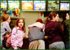

|
 |
 |
|||||
| Breeding
farms are located away from residential areas in the cool climate of West
Java. The hen houses are designed according to a closed-house system with
modern equipment such as cooling fans, automatic feeding and nipple drinking
system. Sierad Produce operates twelve breeding farms and the majority are located in West Java. The farms produce a combined total of more than 120 million day-old chicks per annum, catering to Sierad Produce's own businesses as well as for the open market, both domestic and export. |
 | November
16, 2003, Jakarta. PT Sierad Produce Tbk is the entity resulting from the merger in 2001 of four companies conducting the core businesses of the Sierad Group. These were PT Anwar Sierad Tbk, PT Sierad Produce Tbk, and their fully owned subsidiaries, PT Sierad Feedmill and PT Sierad Grains. MORE |
| Indonesia | English |